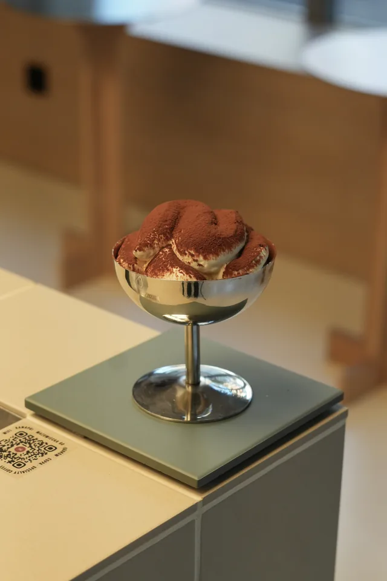
Klasyczne
01Od niego zaczęła się historia COPPA. Inspiracją było tiramisu, które Kasia i Tomek jedli w podróży po Włoszech. Tym deserem zabieramy Was do Kalabrii.
bez alkoholu, stałe
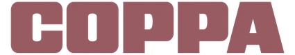
ENCOPPA to kawiarnia specialty i tiramisu bar na Krowodrzy. Tiramisu robimy sami, codziennie, i podajemy w pucharku. Klasyczne i pistacjowe są zawsze, reszta zmienia się z sezonem.
Wszystkie robimy na miejscu, codziennie, i wszystkie są bez dodatku alkoholu. Klasyczne i pistacjowe są z nami na stałe, pozostałe reagują na sezon. Trzy smaki są też bez kawy. Przesuń, żeby zobaczyć całą gablotę.
01/07
przesuń w bok

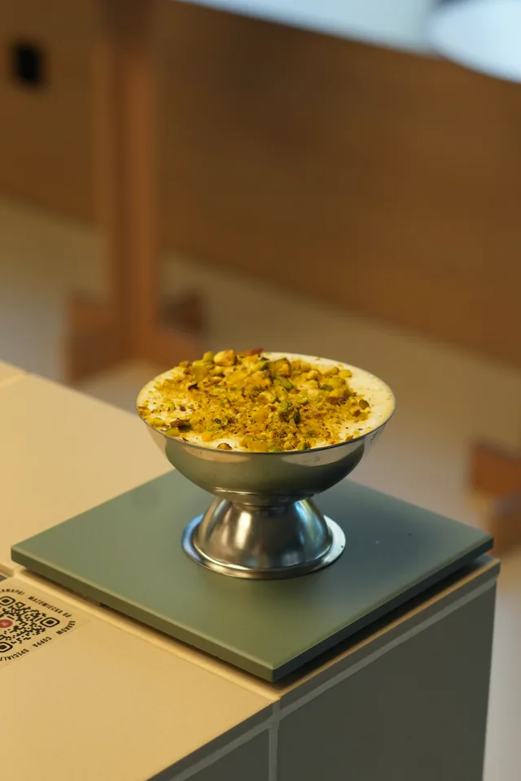
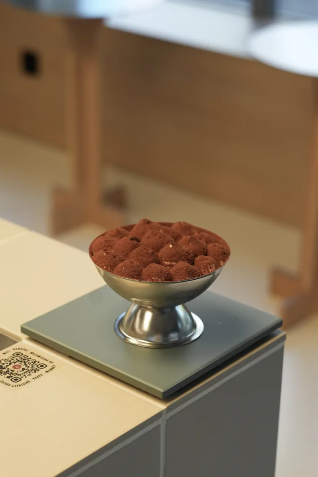
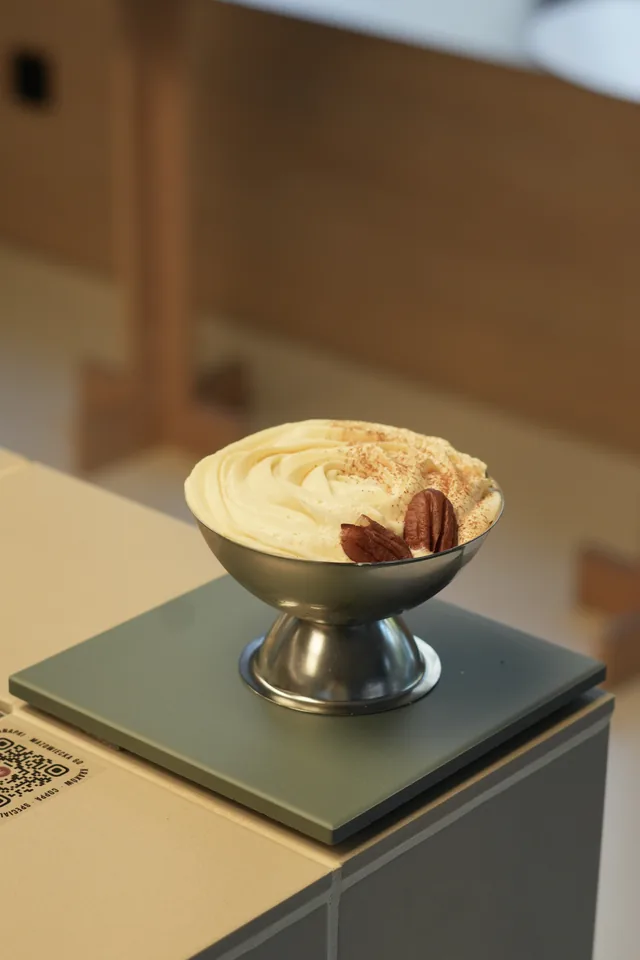
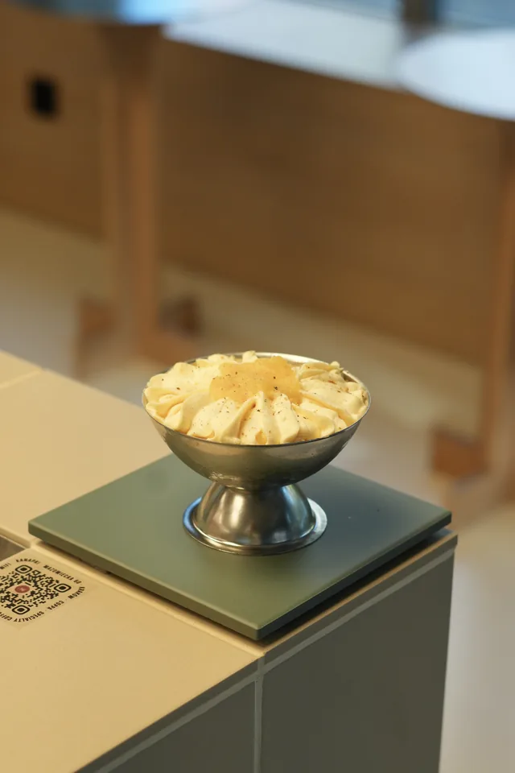
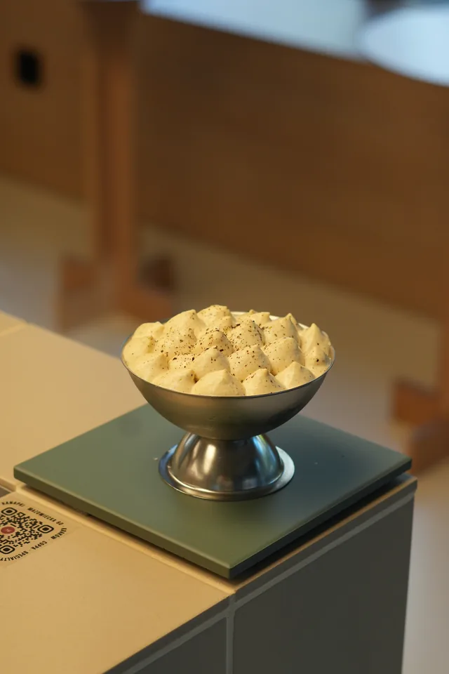
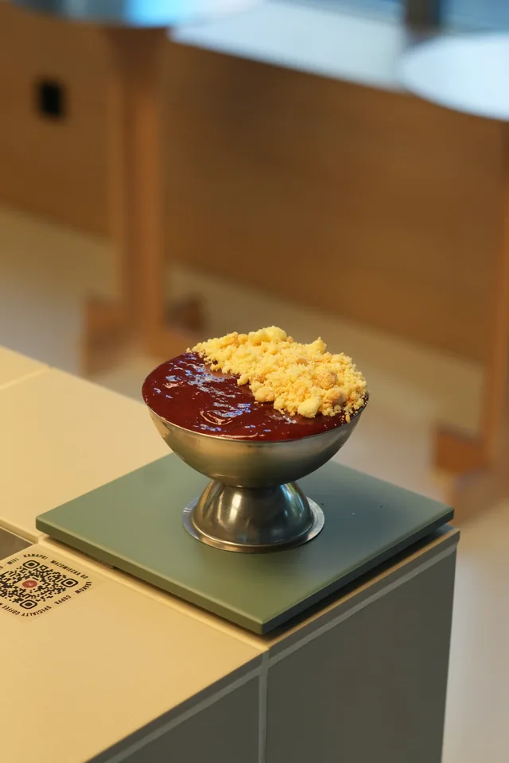
Karta napojów zmienia się razem z sezonem. Teraz jesień: kawy na domowych syropach i napoje bez kawy na chłodniejsze dni.
01/08
przesuń w prawo
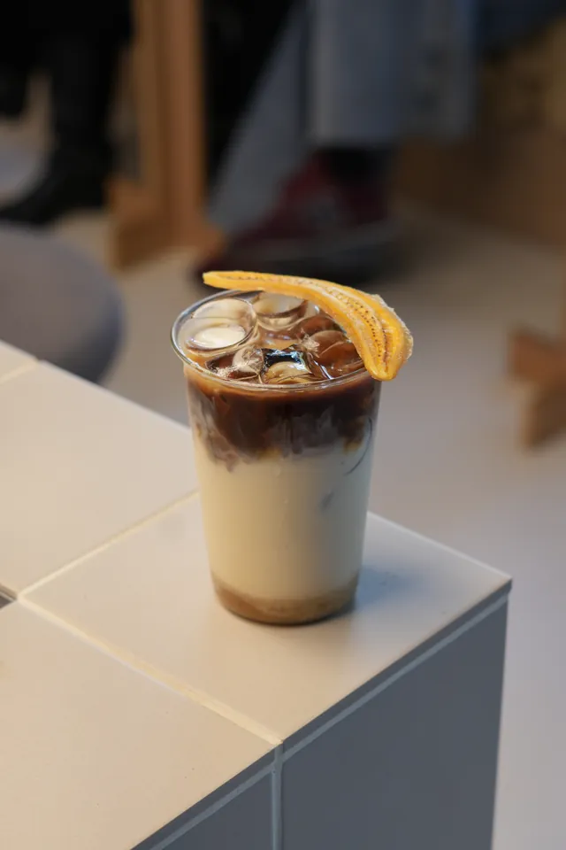
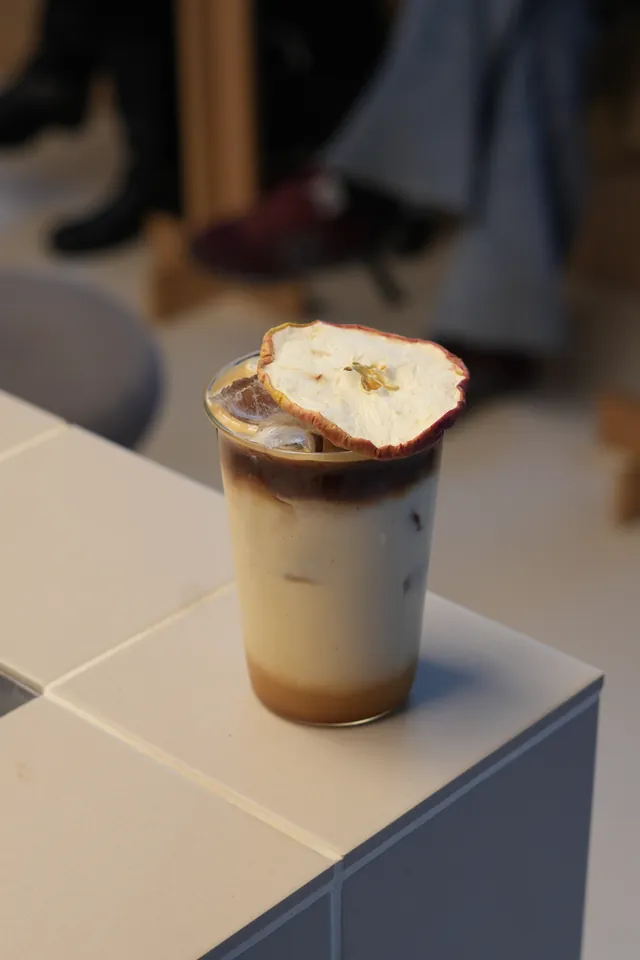
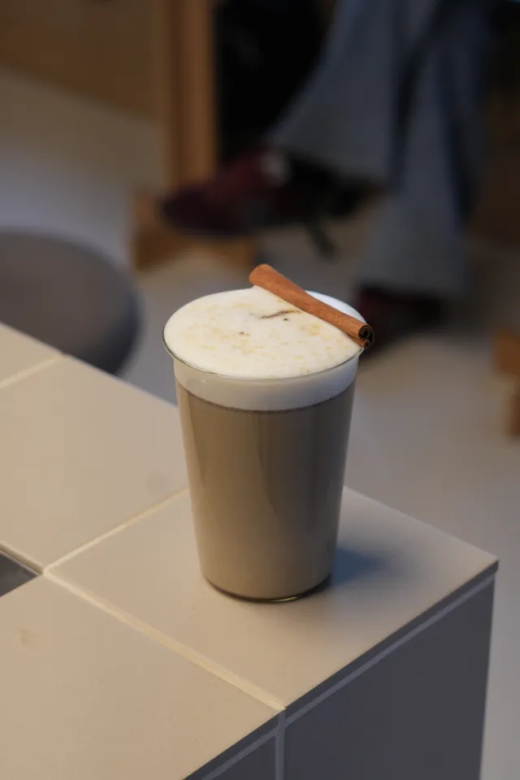
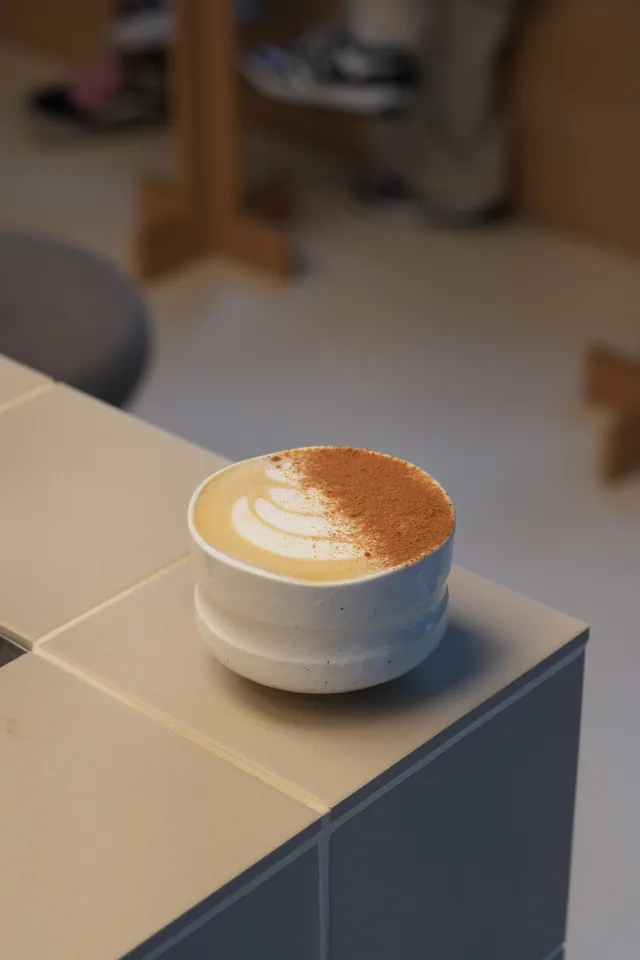
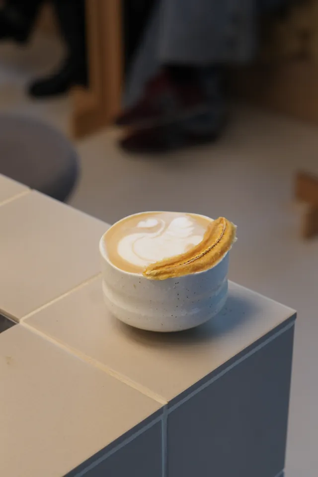
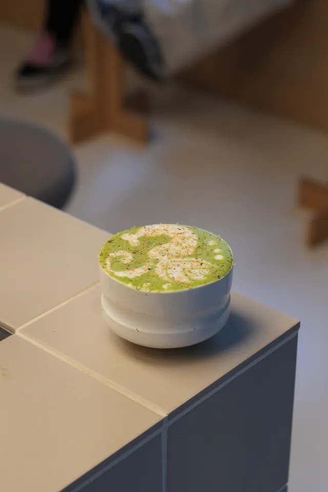
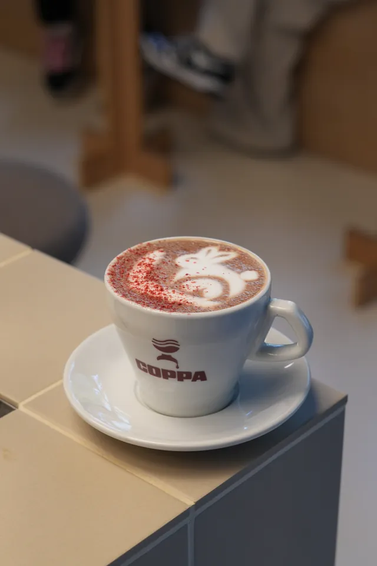
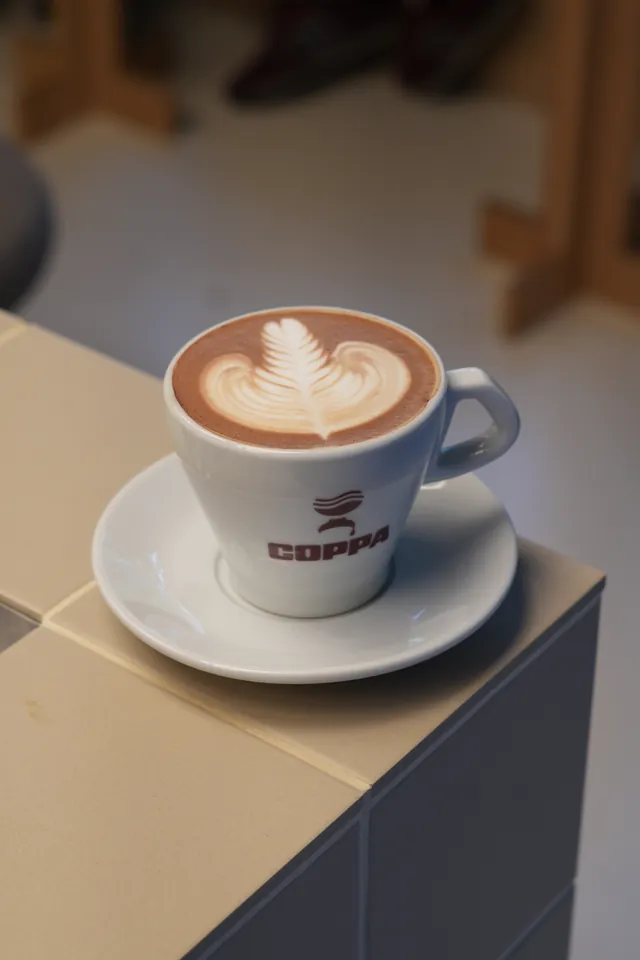
COPPA powstała wokół dwóch rzeczy: kawy specialty i tiramisu. Tiramisu jest tu głównym produktem i osią całego pomysłu na lokal.
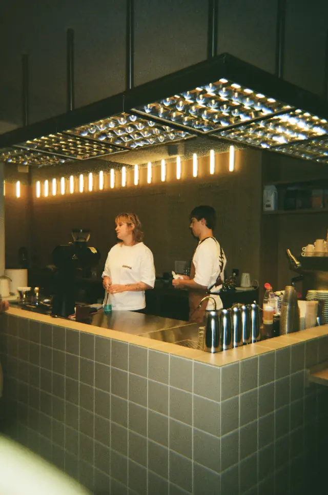
Nazwa pochodzi od włoskiego słowa oznaczającego puchar. Od początku chcieliśmy podawać tiramisu jako osobny, dopracowany deser w pucharku. Pucharek stał się najbardziej charakterystycznym elementem COPPY.
Robimy je sami, każdego dnia. Tiramisu daje nam włoski punkt wyjścia, ale nie kopiujemy włoskiej kawiarni jeden do jednego. Stąd Earl Grey, banoffee, ciasto marchewkowe w pucharku i nowoczesne kawy specialty.
Za COPPĄ stoją właściciele, nie sieć ani inwestor. Kasia odpowiada za tiramisu i tworzy wszystkie nowe smaki, Tomek odpowiada za bar.
Jesteśmy na Krowodrzy, 8 minut spacerem od Placu Inwalidów i 25 minut od Rynku Głównego, z dala od turystycznego tłoku. To część charakteru tego miejsca. Chcemy być lokalem, do którego się wraca, a nie punktem na weekendowej trasie. Otwarci od sierpnia 2026.
WiFi dla gości
Sieć COPPA GUEST
tiramisu
Na wynos mamy zwykle 3 do 4 smaków tiramisu dziennie. Które są dziś, zapytaj przy kasie.
W sezonie stoliki stoją też przed lokalem, na Mazowieckiej.
W COPPIE przy Mazowieckiej 60 na Krowodrzy. Tiramisu robimy sami na miejscu, codziennie, i podajemy w pucharku. Klasyczne i pistacjowe są zawsze, do tego smaki sezonu.
Stałe: klasyczne i pistacjowe. Sezonowe teraz: banoffee, marchewkowe, wanilia z gruszką i tonką, Earl Grey oraz śliwka z kruszonką. Wszystkie są bez dodatku alkoholu. Sezonowe rotują, aktualna gablota jest wyżej i na Instagramie.
Tak. Bez kawy są: Earl Grey, marchewkowe oraz wanilia z gruszką i tonką. Wszystkie trzy są też bez dodatku alkoholu. Smaki sezonowe rotują, więc które są dziś, najlepiej sprawdzić przy kasie.
Tak. Wszystkie tiramisu w aktualnej karcie są bez dodatku alkoholu: klasyczne, pistacjowe, banoffee, marchewkowe, wanilia z gruszką i tonką, Earl Grey oraz śliwka z kruszonką.
Tak. Pistacjowe jest u nas smakiem stałym, obok klasycznego: pistacja gra w nim główną rolę od pierwszej do ostatniej łyżeczki. Robimy je na miejscu, codziennie, bez dodatku alkoholu.
Tak. Każde tiramisu podajemy w stalowym pucharku. Stąd zresztą nazwa: coppa to po włosku puchar.
Tak. Na wynos mamy zwykle 3 do 4 smaków dziennie, nie każdy smak jest dostępny. Które są dziś, zapytaj przy kasie.
Wyłącznie specialty. Bazowe espresso z palarni Roastains, na drugim młynku rotujące ziarna o owocowym profilu, na przykład Etiopia albo Kostaryka. Często pracujemy też ze szwedzką Gringo Nordic Coffee Roasters. W stałej karcie: espresso, cortado, cappuccino, flat white, latte, iced latte, batch brew, hand brew, cold brew, orange espresso i espresso tonic.
Tak. Klasyczne, bez laktozy, owsiane albo grochowe, każde bez dopłaty.
Tak. Jesienią w karcie jest Pumpkin Spice na naszym domowym syropie z pieczonej dyni i przypraw korzennych z nutą pomarańczy. Do tego Iced Banana Bread, Iced Apple Pie Latte, Banana Bread Latte, White Vanilla Matcha, Berry Cocoa, Dark Chocolate Mocha i Oat Cinnamon Hojicha na mleku owsianym.
Tak, kanapki na ciabatcie: z salami piccante, ricottą i miodem chilli, z mortadelą, stracciatellą i pistacją oraz wege z oliwkami, suszonymi pomidorami i stracciatellą.
Tak, sieć COPPA GUEST. Hasło znajdziesz w sekcji Na miejscu i przy kasie.
Mazowiecka 60, 30-019 Kraków, na Krowodrzy: 8 minut spacerem od Placu Inwalidów, 10 minut od Parku Krakowskiego i Nowego Kleparza, 25 minut od Rynku Głównego. Trasę otworzysz w Google Maps lub Apple Maps w sekcji Kontakt.
Od poniedziałku do piątku 8:00-19:00, w sobotę i niedzielę 9:30-18:00.
Kasia i Tomek, właściciele. Kasia odpowiada za tiramisu i tworzy wszystkie nowe smaki, Tomek odpowiada za bar. Otworzyliśmy się w sierpniu 2026.
Znajdziesz nas
Krowodrza, 30-019. Wejście od ulicy, w sezonie ogródek przed lokalem.
Godziny otwarcia
| pon | 8:00-19:00 |
|---|---|
| wt | 8:00-19:00 |
| śr | 8:00-19:00 |
| czw | 8:00-19:00 |
| pt | 8:00-19:00 |
| sob | 9:30-18:00 |
| nd | 9:30-18:00 |
For visitors
COPPA is a tiramisu bar and specialty coffee shop in Kraków's Krowodrza district. Tiramisu is made in-house every day and served in a coppa, a small steel goblet. Read the English version of this page.